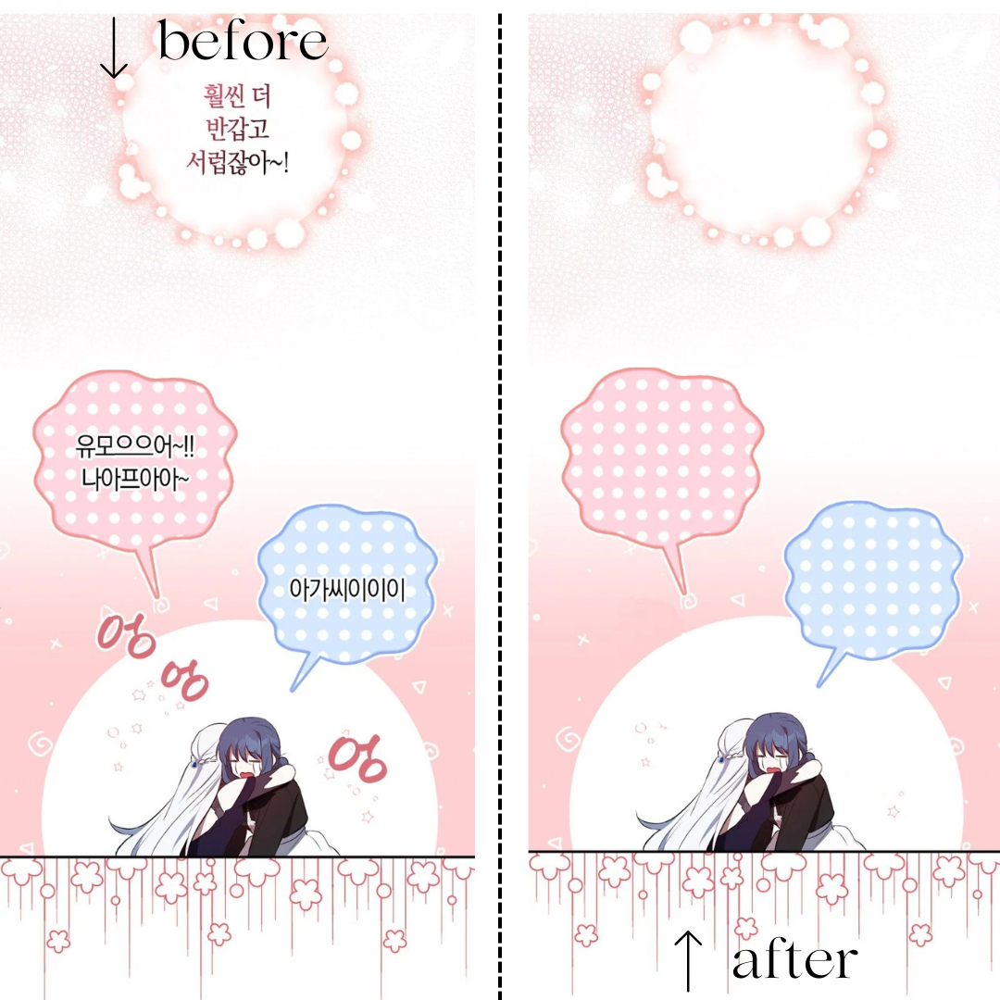

Selected Projects

Urban Drainage Design
Analisis hidrologi dan perhitungan dimensi saluran drainase perkotaan menggunakan integrasi data ArcGIS dan MS Excel.
MS Excel
Hydrology Analysis
ArcGIS
Hec-Ras
Sediment Transport Simulation
Simulasi pemodelan angkutan sedimen dasar (bed load) menggunakan Delft3D untuk analisis morfologi sungai.
Delft3D
Hydraulic Modeling
Sediment

Digital Image Restoration
Teknik redrawing dan cleaning pada panel komik digital untuk restorasi visual menggunakan Adobe Photoshop.
Adobe Photoshop
Digital Imaging
Creative Art